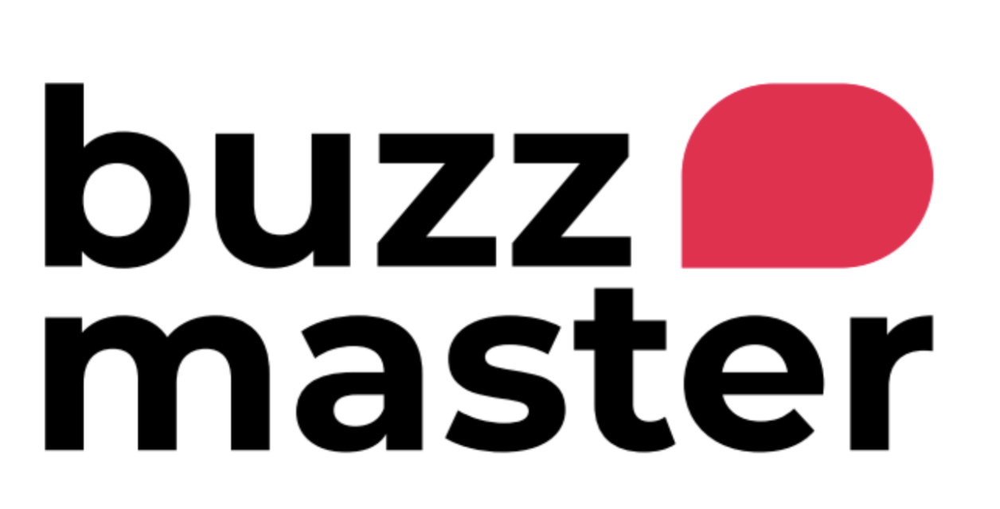
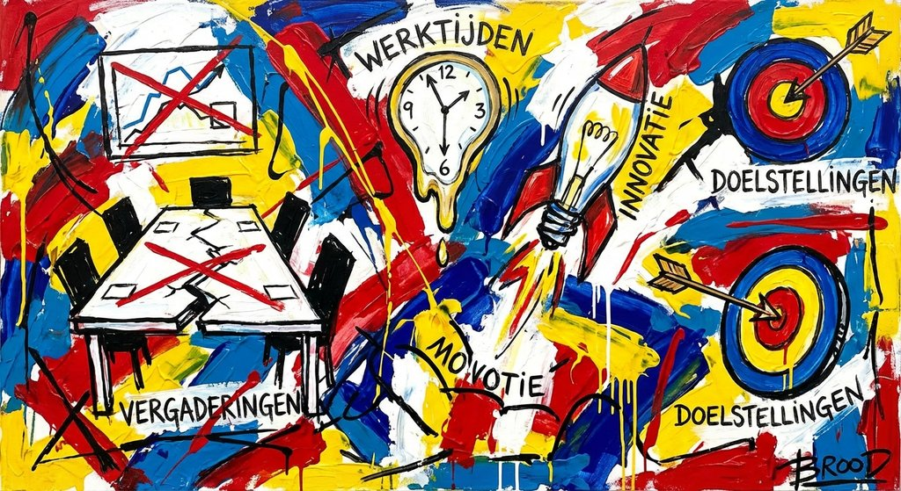

Een AI die meeluistert, meedenkt en je publiek activeert. Live, op het podium, in realtime.
NOVA is een AI-gestuurde co-host die live meedraait tijdens je event. Ze luistert mee, gaat in gesprek met de spreker en activeert het publiek op precies het juiste moment.
Ze voert live een dialoog met de host, stelt verhelderende vragen, doet fact-checks en brengt eigen inzichten in. Tegelijkertijd schakelt ze zelfstandig tussen polls, open vragen en quizzen. Als het publiek antwoordt, analyseert ze alle resultaten direct — thema's, sentiment, uitschieters — en presenteert de kern terug aan de zaal.
Geen voorbereiding, geen knoppen, geen technische drempel. De spreker heeft een volwaardige gesprekspartner naast zich die ook nog eens de hele zaal kan lezen.
Eén doorlopende loop van spreken, vragen, stemmen en analyseren. Volledig hands-free.
Draait volledig in de browser. Geen installatie, geen downloads. Wij regelen de setup en staan standby tijdens je event.

Plan een demo en ervaar zelf wat BuzzMaster kan betekenen voor jouw event.
Plan een demo